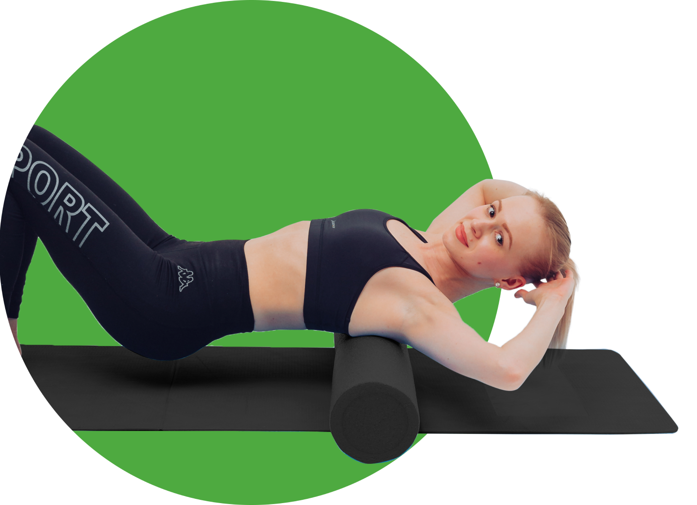
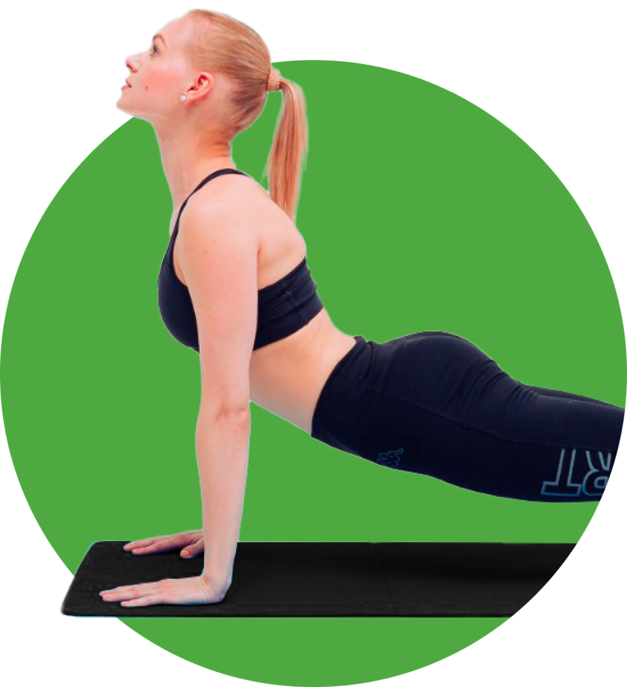
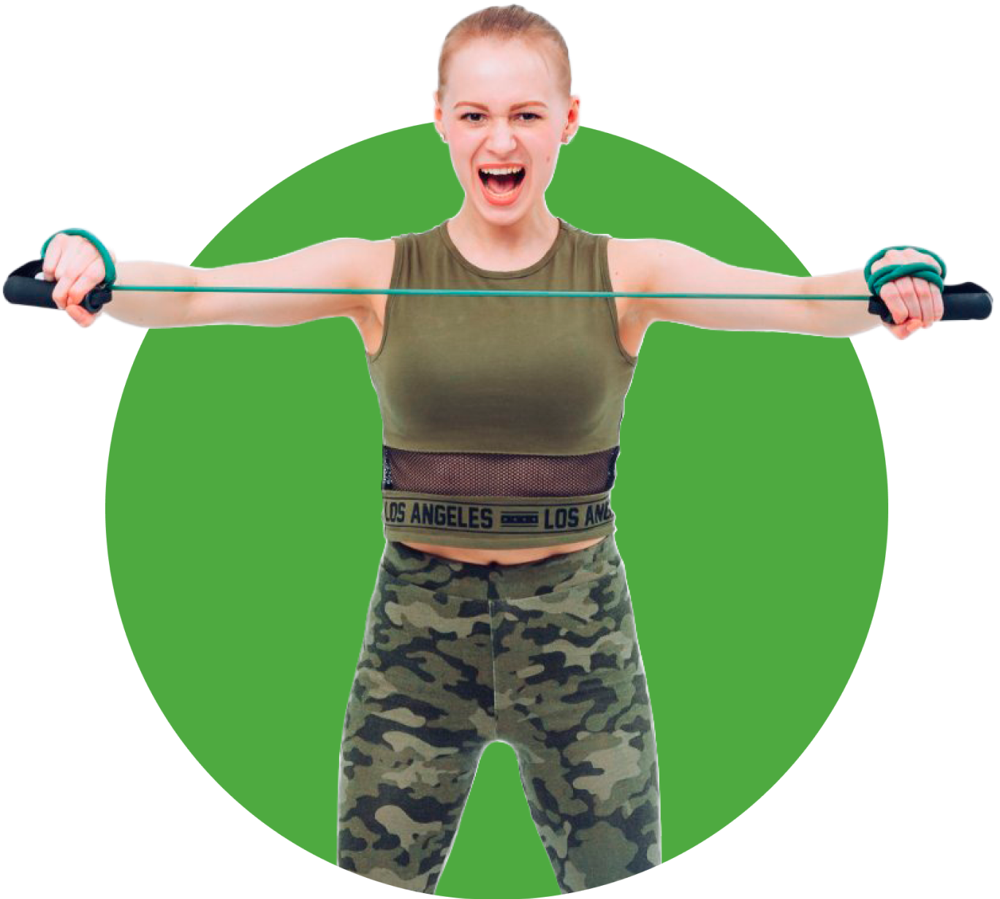
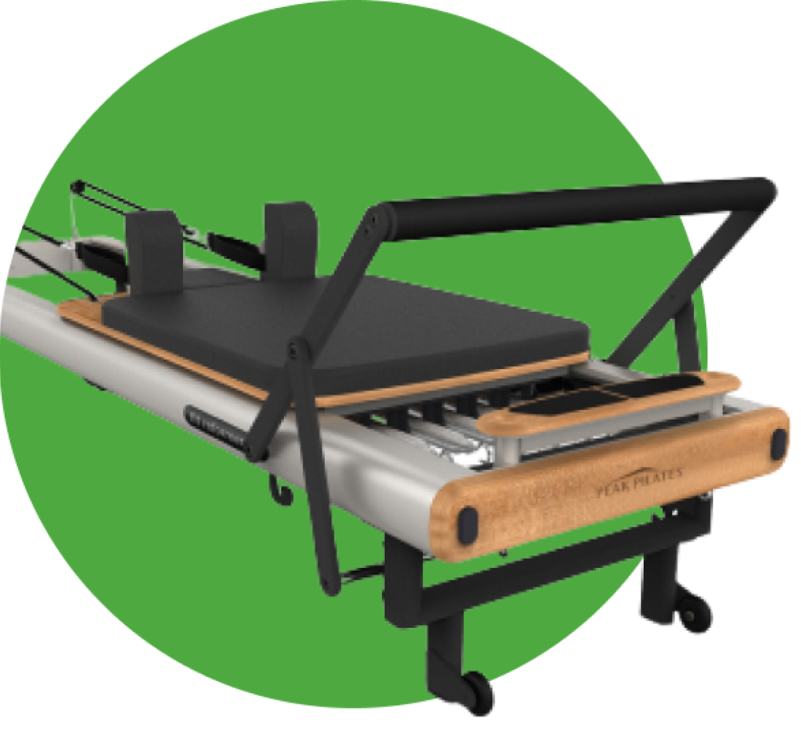

тренер по фитнесу яна лебедева
Грамотный
фитнес
с любовью к телу
Двигайтесь! Грамотно, осознанно, с пользой и любовью к своему телу. Это изменит вашу жизнь к лучшему!
Оставить заявку 1@3x.png)
Привет, меня зовут Лебедева Яна
Я — сертифицированный фитнес-тренер
Выпускник университета физической культуры, спорта и здоровья им. П. Ф. Лесгафта
Смотреть дипломДвукратный призёр соревнований по бодибилдингу в категории фитнес-бикини
Читать о тренереМоя квалификация подтверждена сертификатами ведущих российских и международных школ
Сертификаты
Принципы, которых
я придерживаюсь в фитнесе
Фитнес может быть разным. Главное — он должен быть для здоровья
Я использую знания, полученные у лучших специалистов по движению, и применяю их в своей работе
В первую очередь я делаю акцент на обучении человека оптимальным движениям, помогаю улучшить, а также изменить его двигательные стереотипы, чтобы добиться хорошего самочувствия и понимания, как двигается тело
Лучшее лекарство для вашего тела — это эффективное дыхание и качественные осознанные движения
Я люблю силовые тренировки. Но бездумно «качаться» без желания понять, как работает тело — это не ко мне
Я стараюсь показать человеку фитнес с разных сторон: от обучения с нуля основным паттернам движения и дыхания до разнообразных функционально-силовых тренировок
Разум и тело — две составляющие одного целого
Какие тренировки я даю. Или как
понять, что вам — ко мне?
Мои подопечные разного возраста и пола. Вы можете обратиться ко мне, если вам подходят занятия, которые я даю. Мы обязательно подберём подходящий уровень нагрузки и вид тренировок. Если вы хотите здоровое и красивое тело, хотите чувствовать и понимать свой организм, ощущать лёгкость в движениях — вам ко мне.
-
Тренировки по системе Polestar Pilates от уровня Beginners до Advance
Преимущества:
- 1. Улучшение подвижности суставов, артикуляции позвоночника
- 2. Работа с дыханием, мышцами КОРа
- 3. Выстраивание оптимального комфортного положения тела в пространстве
- 4. Уменьшение скованности, зажатости
- 5. Работа с проприоцевтивностью (т.е. насколько хорошо вы ощущаете своё тело, управляете им)
- 6. Развитие силы и гибкости
- 7. Работа с глубинной и глобальной мускулатурой
- 8. Красивое и функциональное тело
-
Тренировки на гибкость — динамическая растяжка
Преимущества:
- 1. Улучшение гибкости и контроля всего тела
- 2. Лёгкость в движениях
- 3. Мобильность суставов и артикуляция позвоночника
- 4.Улучшение кровотока и лимфотока
- 5. Упругое и подтянутое тело
-
Функционально-силовые тренировки
Преимущества:
- 1. Развитие силовых качеств
- 2. Мышечный тонус
- 3. Обучение эффективной технике движений
- 4. Развитие выносливости, координации
- 5. Работа как со своим телом, так и с дополнительным оборудованием
-
Pilates Reformer. Тренировки на оборудовании
Преимущества:
- 1. Укрепление всех мышечных групп
- 2. Улучшение контроля тела
- 3. Мобильность суставов
- 4. Подготовка к другим видам спорта, фитнеса
- 5. Развитие баланса, координации
- 6. Сила и гибкость
Тренировочный процесс
Посмотрите видео с тренировок, чтобы лучше понимать как мы работаем с подопечными
Описание видео вкратце что происходит
Описание видео вкратце что происходит
Стоимость занятий
Персональная тренировка в клубе “Физкульт Спорт”
1350
занятие 60 минут
*При наличии абонемента в клуб
Онлайн-тренировка
1000
занятие 60 минут
Первая консультация — бесплатно!
Тренировка на дому
1500
занятие 60 минут
С минимально необходимым оборудованием
Отзывы
Владимир Чевардин
22.11.2021
Яна Лебедева прекрасный специалист своего дела, универсальный тренер. С ней можно заниматься и силовыми тренировками и пилатесом. Чувствуется многолетний опыт, огромная практическая и теоретическая база знаний человека. Пусть с виду это хрупкая девушка, но её воля, стремление, самоотдача и педантичность в подходе к клиенту и к самому процессу тренировки не могут не поражать. Принцип работы Яны — это индивидуальный подход к каждому клиенту. Она чётко понимает возможности клиента и старается учитывать все его физиологические особенности и строить программу согласно им и пожеланиям клиента. Перед выполнением каждого упражнения Яна проводит инструктаж, описывая принцип выполнения упражнения, и личным примером показывает, как упражнение должно выполняться. Выполнение упражнений проходит под её пристальным вниманием, очень большое внимание уделяется именно правильности выполнения каждого упражнения: дыханию, движению рук, постановки ног и тела в целом. С моей точки зрения, такое построение тренировочного процесса очень правильное, оно позволяет понимать всю схему тренировки, даёт клиенту уверенность в правильности выбора тренера, что время, проведённое с тренером, будет потрачено не зря.
С Яной Лебедевой я занимаюсь уже больше года по индивидуальной программе. Каждое занятие для меня — это шажок к хорошему самочувствию в целом и расслаблению после рабочего дня. У меня никогда нет сомнения, что время, которое я провожу на тренировке с Яной — это время, проведённое не зря. Пусть иногда сложно, тяжело, но её заинтересованность в успехе клиента, самоотдача во время тренировок не могут не поражать и заряжать энергией.
Светлана Волкова
25.11.2021
Мои тренировки с Яной только начались, и вроде кажется, что я с десяток лет ходила в спорт.зал и уже должна быть готова ко всему, но не тут-то было. После каждой тренировки у меня чувствуются те мышцы и места, о существовании которых я и не догадывалась. Оценила всю важность дыхания и у меня наконец-то появилась надежда реанимировать мою больную спину. Если бы меня попросили в двух-трёх словах охарактеризовать то, что мы делаем на тренировках, то это «безумно сложная простота». Вроде там ручками помахал, тут в сторону нагнулся, но эффект и ощущения от тела потрясающие. Ну, и конечно, Яна как тренер — это любовь. Сделать что-то не так не удастся.
Волошина Светлана
21.10.2021
Хочу поделиться своими впечатлениями от персональных тренировок с тренером Яной Лебедевой. Моя повседневная жизнь, как и у многих других современных людей, наполнена всевозможными стрессовыми ситуациями, что отражается на моём теле (головные боли, боли в шее, спине и, как выяснилось в ходе занятий с Яной, даже в стопе).
Облегчения мне приносил массаж, но даже массажист уверял, что без самостоятельных занятий полного успеха не добиться.
После продолжительного поиска тренера я начала тренировки с Яной. Очень лёгкая в общении, внимательная и чуткая Яна с первой встречи прониклась моей проблемой и составила план тренировок.
И вот после нескольких месяцев занятий я могу с уверенностью заявить, что тренировки с Яной мне пошли на пользу. Существенно снизилось напряжение в шее и спине, плечи начали опускаться от ушей, от работы со стопами снизились случаи возникновения судорог в голени и стопе. И это я только в начале пути. Хочу вернуть своему телу подвижность и гибкость, а себе — контроль над свои телом и верю, что благодаря тренировкам с Яной мои цели будут достигнуты.

Бабикова Надежда
03.02.2020
Год назад решила пойти в тренажёрный зал. До этого никогда не занималась там, поэтому очень стеснялась. Более того я совершенно не разбиралась в тренажёрах и решила позаниматься с тренером. На рецепции мне дали визитку Яны Лебедевой. С первой же нашей встречи Яна мне понравилась, она очень располагает. С ней легко общаться, она очень хорошо объясняет. Мне казалось, что тренажёры — это скучно, но Яна доказала, что это не так. Она составила для меня разнообразные тренировки. Больше всего мне понравилось, что она учитывает особенности каждого своего клиента. В частности, у меня болела спина, но после тренировок с Яной боли прошли, я уже год как забыла про них. Я до сих пор занимаюсь с Яной, и каждый раз она открывает мне новые возможности моего организма.
P. S. А ещё, ей всегда можно написать или позвонить, если есть какие-то вопросы по поводу тренировок или питания, и она всегда подробно и терпеливо всё объяснит.
Тарханова Василиса
17.06.2021
Хочу выразить свою огромную благодарность тренеру Лебедевой Яне.
Яна поистине профессионал своего дела, и самая первая встреча это доказала. Яна подробно расспросила о желаемых результатах, а также о состоянии здоровья с целью построения программы тренировок, подходящей лично для меня. Ещё очень радует, что у Яны множество сертификатов по повышению квалификации, что не позволяет усомниться в профессиональной грамотности тренера.
Яна очень чуткий, добрый и отзывчивый человечек. Каждая тренировка проходит в позитивной атмосфере, позволяющей тренироваться с ещё большим удовольствием. Яна прослеживает и подмечает любое неправильное движение тела, после чего тактильно помогает выполнять упражнения правильно, чтобы не нанести вред здоровью.
Каждая тренировка с Яной отличается от предыдущей, что не даёт мышцам привыкнуть к нагрузкам и позволяет добиться ещё большего успеха. Я впервые встретилась с практиками самомассажа и упражнениями на стопы, казалось бы, ничего особенного, но это позволило мне почувствовать лёгкость в теле. После тренировок также наблюдается подъём энергии и улучшение настроения, хотя ранее при занятии спортом без тренера этого не замечала.
Если есть желание добиться не только спортивного тела, но и получить позитивные эмоции, заряжающие на день, то всем обязательно советую попасть к Яне.
Яна, спасибо тебе огромное!
Зиновьев Иван
16.06.2021
Я начал заниматься с Яной Лебедевой с октября прошлого года, на данный момент это уже более восьми месяцев тренировок. До этого у меня практически отсутствовал опыт занятий спортом — физкультуру в школе и институте я старательно избегал, а абонемент в зал приобрёл исключительно ради бассейна. Впрочем, поплавав в бассейне регулярно несколько месяцев подряд, я научился находить для себя уважительные причины, чтобы не ходить, и в результате стал появляться в бассейне в лучшем случае — раз в неделю.
На этом этапе моей спортивной стагнации мне и позвонила Яна, предложив начать заниматься с тренером в зале. Разумеется, учитывая мой предыдущий опыт, я отнёсся к этому предложению со скептицизмом. За почти год владения абонементом клуба я был в тренажёрном зале один или 2 раза и абсолютно не планировал начинать туда ходить, однако, из любопытства решил попробовать и, не побоюсь сказать, что это решение изменило мою жизнь.
С тех пор я начал регулярно посещать зал. Наличие тренера позволило поддерживать стабильность и регулярное расписание. Стало невозможным просто отключить будильник и проспать запланированное занятие в зале, приходилось вставать и идти в зал вне зависимости от настроения и желания спать, но благодаря Яне после тренировки я всегда чувствовал гордость и радость от преодоления лени и с пользой проведённого времени. Все тренировки были не похожи одна на другую — мы работали над гибкостью, балансом, выносливостью и, конечно же, силой.
Теперь я точно знаю, что продолжу заниматься. Можно сказать, что Яна сделала невозможное, привив мне интерес к залу, и единственное, о чём я жалею — что не начал заниматься с ней раньше.
Воронина Надежда
16.06.2021
Я обратилась к Яне Лебедевой за персональными тренировками,чтобы решить свои проблемы со спиной: у меня воспаление крестцово-подвздошного сочленения, регулярные боли, врачи рекомендовали укрепление мышц КОРа.
На первой встрече Яна со мной беседу-знакомство, задавала много вопросов о моем состоянии, уровне физической подготовки, даже о питании. В качестве тренировок она предложила начать с пилатеса. Тренировки с Яной очень отличаются от обычных занятий по пилатесу, на которых я раньше была: Яна очень много внимания уделяет отстройке правильной позиции, учит внимательно относиться к каждому движению: былоочень непривычно получить такую серьёзную нагрузку от казалось бы простых упражнений.
Мне понравилось, что Яна отслеживает моё состояние: в зависимости от прогресса меняет программу, предлагает более сложные варианты упражнений, добавляет силовые тренировки. Через 2–3 недели занятий я почувствовала значительное улучшение состояния своей поясницы, улучшилась осанка, я научилась «включать» мышцы КОРа в повседневных ситуациях — это позволило уменьшить степень и снизить количество болевых эпизодов.
Яна — квалифицированный тренер, обладает знаниями не только по технике упражнений в тренажёрном зале, но разбирается в проблемах опорно-двигательного аппарата и может предложить упражнения, помогающие улучшить состояние. Приятно, что Яна не ограничивается обучением в зале, но и после тренировки всегда интересуется о самочувствии, даёт упражнения для отработки дома.
На летний период приостановим наши занятия, но с осени рассчитываю продолжать, так как Яна действительно помогает мне с больной поясницей.
Рылкин Алексей
26.07.2020
Могу дать только положительный отзыв о работе с тренером Лебедевой Яной. Имею ряд проблем со спиной в области поясницы (смещение позвоночных дисков и грыжи). Получил данный «подарок» во время прохождения военных сборов в университете. Ранее без поддерживающего пояса не мог давать каких-либо нагрузок на спину (даже поднять чемодан 20 кг) – сразу болела спина. На текущий момент засчет укрепления мышц спины и таза (большой упор в тренировках делаем на это) считаю, что проблему удалось решить.
Что нравится в работе с Яной:
- Индивидуальный и часто креативный подход в выборе упражнений для каждой конкретной ситуации.
- Отличное знание строения тела.
- Коммуникабельность и способность дать мотивирующий заряд в нужный момент.
P. S. Также хотел бы отметить положительные моменты в улучшении гибкости моего тела за время работы с Яной.
Кочутова Мария
20.03.2020
Хочу выразить огромную благодарность персональному тренеру Лебедевой Яночке. Она настоящий профессионал своего дела! Яна разносторонний тренер, внимательна, мотивирует на результат. Во время её тренировок также параллельно получаешь все необходимую информацию для себя, а именно, что кушать, как правильно питаться, расскажет все про спортивное питание, какие упражнения задействуют те или иные группы мышц. Тренировки с Яной превращаются в занимательный процесс с высокой эффективностью, они интересные, а главное действенные! Тренировки у неё всегда разнообразные, одна на другую непохожие. Время занятий пролетает незаметно. Яна контролирует технику, контролирует моё состояние. Она является отличным мотиватором, замечает мои успехи, поддерживает во всем. В общем, у неё все под контролем. Моё тело изменилось, с тех пор как я стала заниматься с персональным тренером. Были большие проблемы со спиной (боли, осанка), а сейчас боли ушли, скинула избыточный вес, моё «желеобразное» тело стало более упругим. Все девчонки и мальчишки бегом в Физкульт на Белинского, 124 и записываемся к Яночке, скоро лето!
Антонова Виктория
06.03.2020
Яна Лебедева доброжелательная и позитивная. С ней приятно тренироваться и общаться. С ней очень комфортно! Яна отличный профессионал в своём деле. Она образованный, опытный тренер. Яна не просто говорит какие упражнения делать, но и объясняет как работает тело и мышцы, за чем следить во время тренировки, даёт много нужных советов. Всем рекомендую занятия с Яной!
Полозова Анастасия
01.03.2020
Занимаюсь с Яной на индивидуальных тренировках уже больше года, очень довольна: Яна очень профессионально подходит к планированию тренировок, всегда подбирает разные упражнения, поэтому тренировки очень разнообразные. Кроме того, Яна всегда следит за деталями выполнения упражнений, поправляет в процессе такие моменты, которые сложно заметить самостоятельно. Очень рекомендую!
Барсукова Ю.С
13.02.2020
С Яной общий язык нашла сразу. Прислушивается к пожеланиям, старается разнообразить тренировки. Пунктуальна, приятна в общении.
С Яной занимаюсь с начала осени — около 5 месяцев, результат есть и виден не только в зеркале. Изменилось самочувствие в лучшую сторону. Яна всегда очень понятно объясняет влияние того или иного упражения на организм и состояние в целом. Помогает правильно составлять рацион питания. Всегда интересуется здоровьем после тренировки, особенно в начале. Особенно приятно, что внимательно следит за выполнением упражнения и всегда скорректирует. Яна лояльна, что касаемо назначения времени тренировки, подбирает оптимальные часы и идёт на встречу в случае отсутствия возможности приехать.
Имею опыт работы с разными тренерами (их было три) и после перестала видеть смысл в индивидуальных тренировках — ни результата, ни понимания, что именно мне нужно. По рекомендации решила пойти на индивидуальное занятие с тренером Яной и не ошиблась. Очень рада, что встретила тренера, который так ответственно и с самоотдачей относится к своей работе и клиентам. За таким тренером можно пойти и в другой фитнес клуб
Котлячкова Елена
05.02.2020
Хочу выразить огромную благодарность персональному тренеру Лебедевой Яночке. Она настоящий профессионал своего дела! Яна разносторонний тренер, внимательна, мотивирует на результат. Во время её тренировок также параллельно получаешь все необходимую информацию для себя, а именно, что кушать, как правильно питаться, расскажет все про спортивное питание, какие упражнения задействуют те или иные группы мышц. Тренировки с Яной превращаются в занимательный процесс с высокой эффективностью, они интересные, а главное действенные! Тренировки у неё всегда разнообразные, одна на другую непохожие. Время занятий пролетает незаметно. Яна контролирует технику, контролирует моё состояние. Она является отличным мотиватором, замечает мои успехи, поддерживает во всем. В общем, у неё все под контролем. Моё тело изменилось, с тех пор как я стала заниматься с персональным тренером. Были большие проблемы со спиной (боли, осанка), а сейчас боли ушли, скинула избыточный вес, моё «желеобразное» тело стало более упругим. Все девчонки и мальчишки бегом в Физкульт на Белинского, 124 и записываемся к Яночке, скоро лето!
Бабикова Татьяна
03.02.2020
Год назад решила пойти в тренажёрный зал. До этого никогда не занималась там, поэтому очень стеснялась. Более того я совершенно не разбиралась в тренажёрах и решила позаниматься с тренером. На рецепции мне дали визитку Яны Лебедевой. С первой же нашей встречи Яна мне понравилась, она очень располагает. С ней легко общаться, она очень хорошо объясняет. Мне казалось, что тренажёры — это скучно, но Яна доказала, что это не так. Она составила для меня разнообразные тренировки. Больше всего мне понравилось, что она учитывает особенности каждого своего клиента. В частности, у меня болела спина, но после тренировок с Яной боли прошли, я уже год как забыла про них. Я до сих пор занимаюсь с Яной, и каждый раз она открывает мне новые возможности моего организма.
P. S. А ещё, ей всегда можно написать или позвонить, если есть какие-то вопросы по поводу тренировок или питания, и она всегда подробно и терпеливо всё объяснит.
Кондратьева Дарья
27.01.2020
В сеть фитнес — клубов «Физкульт» я хожу не первый год, однако собственными силами не получилось достичь поставленных целей. Так, более полугода назад встретила за стойкой дежурного тренера Яну. Я рассказала, что у меня есть несколько ограничений для занятий спортом, но при этом желание сделать своё тело подтянутым. Она внимательно выслушала, уточнила противопоказания, мы обменялись номерами и назначили следующую встречу.
По результатам разговора была составлена индивидуальная программа на 2 занятия в неделю, во время которых Яна объясняла правильность выполнения движений, для чего они необходимы, корректировала мои ошибки.
Далее составленные программы повторялись через месяц. С первой моей поставленной целью мы справились — я похудела с 58 до 49! Над второй целью — убрать внешние недостатки в фигуре — продолжается работа. Для достижения третьей, самой главной задачи, мы с Яной начали заниматься пилатесом. Меня мучали постоянные головные и грудные боли, неправильная осанка — все эти проблемы буквально после первого занятия начали исчезать. Я не могла поверить, что можно жить без неприятных ощущений, делая на первый взгляд (на самом деле они очень сложные!) незамысловатые упражнения.
Таким образом, я совсем не жалею, что обратилась за помощью к Яне. Очень благодарна ей, так как живу без обезболивающих и радуюсь своей фигуре.
Жук Анастасия
31.01.2020
С тренером «Физкульт Спорт» Яной Лебедевой я занимаюсь с конца декабря 2019го.За это время у меня сложилось мнение о Яне как о высококвалифицированном специалисте. Прежде всего, хочется отметить внимательность, с которой Яна подошла к нашим тренировкам. Она расспросила меня о моём здоровье, о физкультурном опыте, поинтересовалась целями, которые я бы хотела достичь. Так как моя основная задача — похудение, уже на первой тренировке она рассказала о правильном питании, которого стоит придерживаться, а также дала другие полезные рекомендации.
На каждом нашем занятии Яна внимательно следит за мной, за моей техникой, всё доходчиво объясняет. Чувствуется, что всё её внимание как тренера сосредоточено на процессе. Она не только показывает, как нужно делать, но и объясняет, какие мышцы задействованы в упражнении, предупреждает, как делать не нужно.
Мне нравится, что на каждой тренировке мы делаем что-то новое, а не зацикливаемся на одних и тех же упражнениях и тренажёрах. Поэтому занятия всегда разнообразны и интересны.
Для меня как новичка и человека совершенно не тренированного особое значение имеет постепенность. Яна подбирает для меня оптимальную нагрузку, и после занятий я не чувствую себя уставшей. Наоборот, с каждым разом появляются новые силы, а также — желание совершенствоваться и идти вперёд.
Я очень довольна, что мой выбор пал именно на Яну, и я планирую продолжать наши тренировки под её чутким руководством.
Алексеев Макар
24.01.2020
Я начал занятия с Яной в сентябре 2019. Основной целью было сбросить лишний вес. Сразу отмечу, что поставленная задача была выполнена (- 5.5 кг). Занятия проходили дважды в неделю в удобное для меня время. В начале было разочарование и хотелось всё бросить из-за того, что многое не получалось, руки и ноги не слушались. Большая заслуга Яны в том, что она прошла этот момент вместе со мной — в этом заключается её профессионализм и нацеленность на результат. Самым большим удовольствием было осознать, что те вещи, которые ты не мог делать неделю — две назад сейчас начинают получаться.
Яна индивидуально подходит к выбору упражнений и даёт советы по питанию. Спустя 2 месяца я решил возобновить тренировки, чтобы закрепить полученный ранее результат и достичь новых успехов.
Кальсина Светлана
21.01.2020
Я занимаюсь с Яной с начала октября 2019 года. Обратилась к ней после продолжительного перерыва в занятиях — около 10 месяцев. До этого около года занималась с тренером в другом филиале Физкульта, была в неплохой форме. Но так как по работе я сижу целый день за компьютером, такой длительный перерыв негативно сказался на моём самочувствии.
После приобретения абонемента в Физкульт Спорт, я сначала занималась на кардиотренажёрах и наблюдала за работой разных тренеров в зале, больше всего понравился подход Яны. Решила попробовать к ней обратиться, теперь занимаюсь только с ней.
Очень понравилось, что на тренировках идёт мягкая, но в то же время эффективная работа с телом, и нагрузка растёт постепенно (некоторые тренеры не глядя заставляют тебя подтягиваться, отжиматься и делать «бёрпи» на первой же тренировке). Большое внимание уделяется разминке и растяжке, укреплению спины, проработке стоп. От Яны я впервые узнала об упражнениях для спины на ролле (делаю их в обязательном порядке перед каждой тренировкой), миофасциальном релизе и прочувствовала пользу пилатеса на себе.
В результате занятий у меня укрепились мышцы спины, всего тела, и улучшилось самочувствие.
Яна — это внимательный и отзывчивый тренер, который на своём примере показывает важность регулярных занятий и заботливого отношения к своему телу.
И еще немного отзывов...


Контакты
Телефон:
8 (930) 669-89-91
yanchiklebedeva1991@mail.ru
Также вы можете связаться со мной в удобном для вас мессенджере